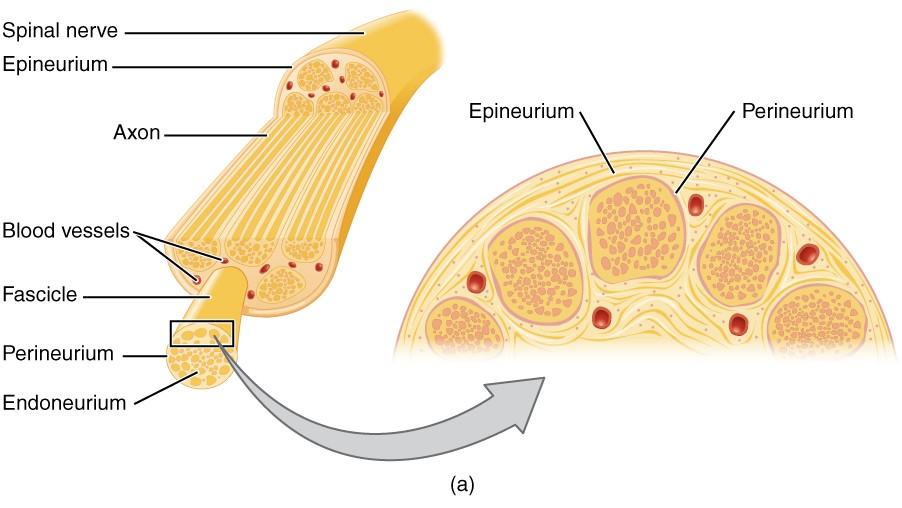

DX.10 — Mononévrite multiple des vasculites 🚩 E4
1. Définition
La mononévrite multiple des vasculites est l'atteinte successive et asymétrique de plusieurs nerfs, par inflammation des vaisseaux qui les nourrissent.
La revue suisse de 2019 décrit cette atteinte comme une mononévrite multiple aiguë ou subaiguë, expression nerveuse des vasculites.rms
En 2010, la Peripheral Nerve Society (PNS) exige, pour un diagnostic pathologique certain, l'inflammation de la paroi et la lésion du vaisseau.pns
Ici, le mot vasculite décrit une maladie des vaisseaux nourriciers du nerf, et non une douleur dépourvue de mécanisme vasculaire.pns
2. Épidémiologie (Suisse, puis Europe)
Les sources lues ne retiennent aucune incidence suisse de la mononévrite multiple, et ce cours ne fabrique pas de taux national.
La revue lausannoise de novembre 2019 indique que les vasculites rares se manifestent par une neuropathie dans 77 pour cent des observations citées.rmsage
Ces vasculites nommées sont la granulomatose de Wegener, la polyangéite microscopique et la panartérite noueuse, dans le même article.rmsage
Le chiffre de 77 pour cent mêle polyneuropathie et mononeuropathie multiple, et ne mesure pas la part exacte de la forme multifocale.rmsage
Aucune série suisse lue ne décrit la létalité propre de cette mononévrite dans les sources retenues pour ce cours.rmsage
Le rang de gravité reste un rang de danger clinique pour cette mononévrite, et non un taux de décès calculé.
Vingt experts de seize pays ont réécrit en 2022, pour l'Alliance européenne des associations de rhumatologie (EULAR), le caractère rare, hétérogène et mortel de ces vascularites.eular
La mise à jour publiée en 2024 dans les Annals of the Rheumatic Diseases comprend quatre principes et dix-sept recommandations.eular
Chez la granulomatose éosinophilique, les anticorps sont présents dans seulement 30 pour cent des cas au diagnostic, et leur absence n'écarte pas la maladie.eular
| Chiffre | Population | Année | Source |
|---|---|---|---|
| 77 pour cent des vasculites citées touchent le nerf | Revue de personnes âgées, Lausanne | 2019 | Revue Médicale Suisse |
| 30 pour cent d'anticorps dans la forme éosinophilique | Synthèse européenne | 2022 | EULAR |
| Incidence suisse de la mononévrite non lue | Suisse | 2026 | Absence dans les sources de ce cours |
Le tableau sépare un pourcentage de neuropathie et une sérologie, les deux ne décrivant pas la même population.rmsageeular
3. Physiopathologie
Le nerf périphérique vit du sang qui circule entre ses faisceaux, et l'ischémie d'un fascicule explique le déficit brutal d'un seul nerf.

Le premier repère montre l'épinèvre, gaine qui entoure tout le tronc nerveux et porte une partie des vaisseaux.
Le deuxième repère montre un faisceau, la souffrance ischémique détruisant les axones de ce fascicule avant ceux du nerf voisin.
Le troisième repère montre les vaisseaux en rouge dans le schéma, et l'inflammation de leur paroi ferme la lumière du fascicule.
La lésion certaine associe l'inflammation de la paroi et le dommage vasculaire, la société du nerf périphérique refusant l'un sans l'autre.pns
Le résultat clinique est axonal et explique la chute d'amplitude à l'électroneuromyogramme plutôt qu'un bloc démyélinisant diffus.
Plusieurs nerfs tombent à des jours différents, et le tableau devient multifocal avant de confluer en une polyneuropathie asymétrique.rms
La revue suisse rappelle cette confluence, une polyneuropathie distale pouvant cacher d'anciens foyers multifocaux.rms
Le traitement immunosuppresseur vise cette inflammation vasculaire et relie la paroi du vaisseau à la décision du point 11.eular
La biopsie montre le vaisseau, alors que l'électroneuromyogramme montre seulement la conséquence axonale, et les deux examens ne se remplacent pas.pns
| Lésion | Examen qui la montre | Traitement qui la vise |
|---|---|---|
| Paroi vasculaire enflammée et détruite | Biopsie nerveuse ou musculaire | Glucocorticoïde avec rituximab ou cyclophosphamide si l'organe est menacé |
| Ischémie fasciculaire | Déficit d'un nerf, puis d'un autre | Ne pas attendre la confluence pour traiter une forme menaçante |
| Axones détruits | Chute d'amplitude, territoire par territoire | La récupération suit la repousse axonale, plus lente que la myéline |
Le schéma reste une figure OpenStax en couleur, publiée sous licence Creative Commons avec attribution, et non un dessin fait pour ce cours.
4. Démarche diagnostique
On écarte d'abord une ischémie médullaire ou une compression, un niveau sensitif et un trouble sphinctérien imposant l'imagerie avant l'immunosuppression.
Le syndrome de Guillain-Barré est en général symétrique et ascendant en quelques jours, alors que la vasculite avance par à-coups douloureux et asymétriques.rms
Une infection ou une diarrhée récente rend le syndrome aigu immun plus probable, sans faire oublier la vasculite si la douleur et l'asymétrie dominent.
La lèpre importée se discute devant une anesthésie en carte avec un épaississement nerveux, la revue suisse signalant des cas possibles en Suisse.rms
La revue précise que le diagnostic de lèpre repose sur l'exposition et la biopsie, et que l'atteinte limitée au nerf concerne moins de 10 pour cent des cas.rms
Une amyotrophie diabétique est proximale et douloureuse, et elle se distingue d'une chute successive du sciatique poplité externe puis du cubital.
Un lymphome ou une infiltration leptoméningée mime des déficits multifocaux, et l'imagerie parfois complétée du liquide se justifie si le tableau n'est pas typique.
La revue de 2019 demande un avis neurologique devant l'asymétrie, l'évolution aiguë et le déficit non longueur-dépendant.rms
| Concurrent | Ce qui tranche | Piège | Conduite |
|---|---|---|---|
| Syndrome de Guillain-Barré | Symétrie et ascension rapide | La confluence vasculitique finit par sembler diffuse | Réanimation si la respiration lâche, et revoir l'asymétrie |
| Compression médullaire | Niveau et sphincters | Un choc spinal abolit les réflexes | Imagerie médullaire urgente |
| Lèpre | Exposition et biopsie cutanée ou nerveuse | Moins de 10 pour cent n'ont que le nerf | Traitement anti-infectieux, pas une immunosuppression isolée |
| Diabète proximal | Douleur de cuisse et amaigrissement | Le diabète peut coexister avec une vasculite | Ne pas conclure sans chercher les autres nerfs et les anticorps |
Le tableau sépare les urgences des diagnostics fréquents, et la vasculite elle-même constitue déjà un danger d'organe.eular
5. Anamnèse ciblée et drapeaux rouges
Chaque question cherche le mécanisme ischémique, un nerf qui tombe en quelques heures n'ayant pas la cause d'une hypoesthésie en chaussettes de plusieurs années.
On date chaque déficit, et l'histoire en marches d'escalier devient visible au lieu d'un flou de plusieurs mois.
La douleur brûlante ou en coup de poignard du territoire atteint se cote, la vasculite du nerf étant habituellement douloureuse.pns
On demande quel côté a commencé, l'asymétrie initiale se perdant quand les territoires confluent.rms
L'asthme, la sinusite, le sang dans les urines, le purpura et l'amaigrissement se cherchent, pour ne pas laisser la maladie systémique derrière le pied tombant.
Une hépatite C ou une cryoglobulinémie se demande, la revue suisse citant ces infections parmi les causes de neuropathie vasculitique.rms
Les médicaments et les toxicomanies se notent, certaines substances déclenchant une vascularite ou une neuropathie toxique qui mime le tableau.
La vitesse de sédimentation très haute, à partir de 100 millimètres par heure, oriente vers une vasculite systémique plutôt que vers une forme limitée au nerf.pns
| Drapeau | Ce qu'il signifie | Action |
|---|---|---|
| Nouveau nerf qui tombe en heures avec une douleur vive | Ischémie fasciculaire | Hospitaliser et lancer le bilan de vasculite le jour même |
| Dyspnée, hémoptysie ou créatinine qui monte | Atteinte pulmonaire ou rénale | Traiter comme une forme menaçant le pronostic vital, sans attendre la biopsie nerveuse |
| Asthme et éosinophiles | Forme éosinophilique possible | Ne pas se fier au seul anticorps, absent dans 30 pour cent des cas |
| Niveau sensitif ou rétention | Moelle | Imagerie avant immunosuppression |
Le tableau montre l'acte qui suit le drapeau, nommer le danger sans le traiter laissant l'ischémie continuer.eular
6. Examen physique ciblé, région par région
L'examen suit le pied, la main, la face et la peau, et cet ordre est celui du lit.
Sciatique poplité externe
Au normal, le patient relève le pied et les orteils contre résistance, et il marche sans accrocher le sol.
Dans la vasculite, le releveur cède d'un côté, souvent en quelques heures, avec une douleur de la loge externe.
La sensibilité du dos du pied disparaît, et on la compare à la plante, qui dépend d'un autre nerf.
Le réflexe achilléen peut persister, le nerf tibial n'étant pas forcément atteint le même jour.
Un steppage bilatéral et synchrone reste moins évocateur, la mononévrite multiple commençant par un côté.rms
Nerf tibial
Au normal, le patient peut se mettre sur la pointe du pied et sent la piqûre sur la plante.
La perte de la flexion plantaire avec une anesthésie de la plante signe le tibial, et on ne l'attribue pas au seul releveur.
L'abolition du réflexe achilléen de ce côté confirme l'atteinte, alors que le côté opposé peut rester vif.
Une plaie plantaire indolore devient possible, et l'inspection de la peau s'impose à chaque visite.
La fenêtre du cubital et du médian montre la main, ces nerfs tombant de façon indépendante.
Cubital et médian
Au normal, l'écartement des doigts, la pince pouce-index et la sensibilité des deux derniers doigts sont conservés.
Le cubital faible donne une griffe et une anesthésie du cinquième doigt, et il se teste à part du médian.
Le médian faible bloque l'opposition et anesthésie les trois premiers doigts, tableau éloigné d'un canal carpien progressif.
Les deux nerfs peuvent tomber à des jours différents, chaque vaisseau nourricier se fermant pour son propre compte.
La fenêtre du radial montre la main tombante, geste qui se confond avec une compression au bras.
Nerf radial
Au normal, le poignet et les doigts se relèvent, et la sensibilité du dos de la main est présente.
Une main tombante douloureuse, sans compression évidente, doit faire chercher les autres nerfs, la vasculite dépassant rarement un seul site.
On palpe le brachio-radial pendant la flexion du coude en position neutre, et un muscle faible oriente vers un radial haut.
Cuisse et fesse
Au normal, le patient étend le genou et se tient sur une jambe sans que le bassin chute.
Une cuisse douloureuse avec un quadriceps faible et un réflexe rotulien aboli oriente vers le crural, et le pied opposé se teste ensuite.
Le diabète peut produire un tableau proche, et les signes systémiques se cherchent avant de conclure à une amyotrophie diabétique.
Face, peau et pouls
Au normal, les pupilles, la mimique et la déglutition sont symétriques, et la peau ne porte ni purpura ni livedo.
Une paralysie faciale périphérique ou une diplopie s'ajoutent parfois, et les nerfs crâniens se testent même si la plainte est au pied.
Le purpura palpable, les nodules et le livedo se cherchent sur les jambes, et ils montrent que la vascularite n'est pas limitée au nerf.
Les pouls périphériques se palpent, afin de ne pas manquer une atteinte des gros vaisseaux qui changerait le diagnostic.
La pression artérielle se mesure aux deux bras, une asymétrie orientant vers une autre vascularite que la maladie des petits vaisseaux.
Chaque nerf a sa fenêtre, la technique du geste ne tenant pas dans le seul paragraphe de la page.
7. Approche syndromique
Les syndromes se séparent selon que la vascularite reste dans le nerf ou gagne le rein, le poumon et la peau.pnseular
La fenêtre de la forme limitée au nerf décrit les critères qui l'éloignent d'une maladie systémique.pns
7.1 Vascularite non systémique du nerf
La douleur, l'asymétrie et les poussées aiguës définissent le tableau clinique probable quand la biopsie manque.pns
Les jambes prédominent et le déficit est souvent distal, le pied tombant ouvrant fréquemment l'histoire.pns
L'électroneuromyogramme est axonal et non démyélinisant, et ce profil fait partie de la définition clinique proposée en 2010.pns
Des anticorps, une cryoglobuline ou une sédimentation d'au moins 100 millimètres par heure écartent cette forme limitée.pns
La corticothérapie seule pendant au moins six mois a été proposée en première ligne pour cette forme, selon le consensus de 2010.pns
Une aggravation rapide impose d'ajouter un immunosuppresseur, le même consensus ne laissant pas la monothérapie si la maladie progresse.pns
Après une rémission obtenue en association, l'entretien dure de 18 à 24 mois avec l'azathioprine ou le méthotrexate.pns
La fenêtre de la granulomatose avec polyangéite décrit le nez, le poumon et le rein associés au nerf.eular
7.2 Granulomatose avec polyangéite
La sinusite croûteuse, les nodules pulmonaires et le sang dans les urines accompagnent la mononévrite, et ces organes se cherchent le jour du diagnostic.
L'anticorps anti-protéinase 3 (PR3) se dose avec l'anti-myéloperoxydase (MPO), la recommandation européenne exigeant les deux.eular
Le rituximab est préféré si la maladie rechute, la recommandation de 2022 le plaçant devant le cyclophosphamide.eular
La mononévrite multiple reste un marqueur clinique quand la biopsie du sinus est pauvre, la sensibilité des biopsies des voies aériennes n'étant que de 30 pour cent.eular
La biopsie transbronchique atteint seulement 12 pour cent de sensibilité dans le même texte, et un résultat négatif ne ferme pas le diagnostic.eular
La fenêtre de la polyangéite microscopique décrit le rein et l'anticorps anti-myéloperoxydase.eular
7.3 Polyangéite microscopique
Le rein est souvent au premier plan, avec une créatinine qui augmente et un sédiment actif, et la mononévrite n'est pas le seul organe à sauver.
L'anticorps anti-myéloperoxydase domine souvent le bilan, et l'induction d'une forme menaçante reste le glucocorticoïde avec le rituximab ou le cyclophosphamide.eular
Les échanges plasmatiques se discutent quand la créatinine dépasse 300 micromoles par litre par une glomérulonéphrite active, et non pour le nerf isolé.eular
La fenêtre éosinophilique décrit l'asthme et le cœur, le nerf n'étant pas le seul organe qui tue.eular
7.4 Granulomatose éosinophilique avec polyangéite
L'asthme tardif, les éosinophiles et la mononévrite forment un trio évocateur, et la numération se lit avant de conclure à une simple allergie.
La sérologie reste positive au diagnostic dans seulement 30 pour cent des formes éosinophiliques, et un test négatif laisse la maladie possible.eular
Le cœur, le rein, le système nerveux et le tube digestif menacés justifient le cyclophosphamide avec le glucocorticoïde dans cette forme.eular
Le rituximab peut être une alternative dans la forme menaçante, la recommandation de 2022 l'autorisant à côté du cyclophosphamide.eular
La fenêtre de la panartérite noueuse décrit l'indication suisse de l'azathioprine, que l'information professionnelle nomme.aips-31887rms
7.5 Panartérite noueuse
La revue suisse cite la panartérite noueuse parmi les vasculites qui touchent souvent le nerf, dans le groupe des 77 pour cent.rmsage
Imurek porte la périartérite noueuse dans ses indications, et cette azathioprine reste conforme à l'information professionnelle pour cette maladie.aips-31887
La dose initiale usuelle est de 1 à 3 milligrammes par kilogramme et par jour, dose que le texte suisse donne pour les maladies listées.aips-31887
La dose baisse par paliers de 0,5 milligramme par kilogramme jusqu'à la plus petite dose encore efficace.aips-31887
Si aucune amélioration n'apparaît en 3 mois, l'intérêt de poursuivre se réévalue, comme l'information professionnelle l'exige.aips-31887
| Syndrome | Signes fonctionnels | Signes physiques |
|---|---|---|
| Limité au nerf | Douleur puis déficit par à-coups | Asymétrie, axones, pas d'autre organe |
| Granulomatose avec polyangéite | Sinus, toux, pied tombant | Nodules, sang urinaire, souvent anti-protéinase 3 |
| Forme éosinophilique | Asthme et douleurs des nerfs | Éosinophiles, mononévrite, parfois cœur |
| Panartérite noueuse | Altération et déficits successifs | Nerfs multiples, parfois nodules et hypertension |
Le tableau sépare chaque syndrome sur sa ligne, et le médicament de l'un ne se copie pas sans lire l'indication de l'autre.eular
8. Diagnostic positif et critères
Le diagnostic certain reste histologique et exige l'inflammation de la paroi avec le dommage du vaisseau, sans maladie qui copie cette image.pns
Un lymphome, une granulomatose lymphomatoïde ou une amylose peuvent copier l'image, et le pathologiste doit les écarter avant le mot certain.pns
Sans biopsie, le diagnostic clinique probable repose sur la douleur, l'asymétrie, la prédominance aux jambes, les poussées et le tracé axonal.pns
Ce diagnostic probable ne se pose pas si un autre organe, un anticorps, une cryoglobuline ou une sédimentation d'au moins 100 millimètres par heure est présent.pns
La recommandation européenne indique une biopsie quand elle est raisonnable, et le dosage des deux spécificités d'anticorps.eular
Le traitement d'une forme qui menace un organe ne doit pas attendre le résultat histologique, la recommandation l'écrivant explicitement.eular
La biopsie du nerf reste indiquée quand le diagnostic est incertain et que le délai est sûr, et les deux consignes ne se contredisent pas.pnseular
Les sources lues ne retiennent aucun score suisse qui remplacerait ces critères européens de 2010 et de 2022.pnseular
| Niveau | Ce qui le constitue | Ce qui le fait tomber |
|---|---|---|
| Pathologique certain | Inflammation de la paroi et lésion du vaisseau | Une maladie qui copie l'histologie |
| Clinique probable | Douleur, asymétrie, axones, poussées | Anticorps, cryoglobuline, sédimentation très haute, autre organe |
| Vascularite à anticorps | Clinique compatible et sérologie spécifique, biopsie si possible | Un seul symptôme sans bilan d'organe |
Le tableau distingue le critère suffisant de celui qui reclasse la maladie, le traitement changeant avec le niveau.eular
9. Examens complémentaires
La biopsie nerveuse, idéalement avec le muscle voisin, reste le gold standard, et seule elle montre la paroi vasculaire et sa destruction.pns
Elle ne constitue pas l'examen de première intention si le rein ou le poumon saigne, le traitement ne devant pas attendre.eular
En première intention, on prélève la créatinine, le sédiment urinaire, la numération, la protéine C réactive et les deux anticorps.eular
La fenêtre biologique précise ce que chaque tube change, un bilan incomplet ratant l'organe menacé.eular
Bilan biologique de première intention
La créatinine et le sédiment urinaire cherchent la glomérulonéphrite, et une hausse même modeste avance l'hospitalisation.eular
Les deux anticorps se prescrivent ensemble, l'anti-protéinase 3 (PR3) et l'anti-myéloperoxydase (MPO), un test global ne suffisant pas.eular
Les éosinophiles orientent vers la forme éosinophilique, cependant leur taux ne remplace pas la clinique du nerf et de l'asthme.eular
La sédimentation à 100 millimètres par heure ou plus oriente vers une maladie systémique, selon le critère de 2010.pns
Les cryoglobulines, l'hépatite C et le complément s'ajoutent si le contexte infectieux ou l'âge le suggère, la revue suisse citant ces causes.rms
L'électroneuromyogramme est de première intention pour cartographier les nerfs tombés, et il montre l'axonalité et l'asymétrie.pns
Il ne montre pas le vaisseau, et un tracé axonal asymétrique soutient sans prouver la vasculite.
Si la patiente est enceinte, l'électroneuromyogramme reste le test électrique de choix, il n'irradie pas, et l'imagerie se limite à la question posée.
L'imagerie par résonance magnétique (IRM) du plexus ou de la moelle est une alternative quand un niveau médullaire est possible, et non le test de la paroi.
La biopsie reste de deuxième intention quand la sérologie et l'atteinte d'organe sont déjà typiques, ou se fait en parallèle sans retarder le traitement.eular
Une créatinine au-dessus de 300 micromoles par litre par glomérulonéphrite active fait discuter les échanges, règle qui ne concerne pas le nerf isolé.eular
| Résultat | Signification | Conduite |
|---|---|---|
| Deux nerfs axonaux asymétriques | Compatible avec une mononévrite | Poursuivre le bilan de vasculite le jour même |
| Anticorps spécifique positif et organe menacé | Vascularite à anticorps probable | Glucocorticoïde avec rituximab ou cyclophosphamide, biopsie si elle ne retarde pas |
| Sédimentation d'au moins 100 | Forme limitée au nerf peu probable | Chercher l'atteinte systémique |
| Biopsie avec paroi enflammée et vaisseau détruit | Diagnostic certain | Confirme l'immunosuppression déjà commencée si l'organe était menacé |
Le tableau lie le résultat à l'acte, un tube sans décision n'aidant pas le patient du jour.eular
10. Arbre décisionnel
Si la respiration, le rein ou le poumon est menacé, le traitement de la forme grave commence le jour même, sans attendre la biopsie du nerf.eular
Devant un niveau sensitif franc ou une rétention aiguë, l'imagerie médullaire précède toute immunosuppression du nerf.
Si les déficits sont symétriques et ascendants en quelques jours, on suit les règles du syndrome aigu.rms
La vasculite se reprend seulement si l'asymétrie douloureuse revient, les deux maladies ne se traitant pas de la même façon.rms
Si la mononévrite est douloureuse et par à-coups dans une granulomatose ou une polyangéite microscopique, l'induction associe le glucocorticoïde au rituximab ou au cyclophosphamide.eular
Si la maladie rechute, le rituximab reste préféré au cyclophosphamide dans la recommandation de 2022.eular
Si aucun organe hors le nerf n'est atteint et que la sédimentation reste sous 100, la forme limitée devient possible.pns
Dans ce cas la biopsie devient plus nécessaire, le consensus de 2010 s'appuyant sur elle pour le diagnostic certain.pns
Si cette forme limitée progresse sous corticoïde seul, un immunosuppresseur devient nécessaire, selon le consensus de 2010.pns
Si la panartérite noueuse est le diagnostic retenu, l'azathioprine figure dans l'information professionnelle suisse à la dose de 1 à 3 mg par kilogramme.aips-31887
Si l'aggravation continue après le traitement adapté, on vérifie l'infection, la compliance et le diagnostic avant d'empiler les molécules.eular
11. Prise en charge
11.A But
Le but immédiat est d'arrêter les nouveaux déficits et de protéger le rein, le poumon et le cœur.eular
La repousse axonale ne rend pas un nerf déjà détruit, et la force du premier jour compte autant que la biologie.eular
Le but chiffré du glucocorticoïde est d'atteindre 5 milligrammes d'équivalent prednisolone par jour en 4 à 5 mois, hors information professionnelle.eular
La fenêtre d'urgence ordonne les premières heures d'une mononévrite fébrile ou d'un organe qui lâche.eular
Urgence, premières heures
Dès l'arrivée, on mesure la créatinine, le sédiment, la numération et les constantes, le rein et le poumon passant avant le détail du pied.eular
Dans la première heure, les deux anticorps partent, et la biopsie se programme seulement si elle ne retarde pas un traitement déjà indiqué.eular
Si l'organe est menacé, le glucocorticoïde et le rituximab ou le cyclophosphamide commencent le jour même.eular
Des essais ont utilisé des bolus de 1000 à 3000 milligrammes de méthylprednisolone, et cet usage routinier reste hors information professionnelle.eular
Cette réserve sur les bolus reste hors information professionnelle, elle venant de la société savante et non d'une dose suisse recopiée.eular
11.B Moyens
MabThera est indiqué, avec un glucocorticoïde, dans la vascularite à anticorps sévère et active de l'adulte, granulomatose ou polyangéite microscopique.aips-54378
La dose d'induction adulte de MabThera est de 375 mg par mètre carré, une fois par semaine, pendant quatre semaines.aips-54378
Le rituximab est préféré dans la rechute, et aussi quand la fertilité ou une exposition antérieure au cyclophosphamide pèse dans le choix.eular
La fiche de MabThera décrit l'interdiction de grossesse et d'allaitement, phrases qui ne s'adoucissent pas.aips-54378
MabThera, rituximab
| Spécialité | MabThera, information professionnelle, mise à jour Décembre 2025, numéro 54378. |
|---|---|
| Indication | Vascularite associée aux anticorps, sévère et active, chez l'adulte, en combinaison avec des glucocorticoïdes. |
| Dose d'induction | 375 mg par mètre carré une fois par semaine pendant quatre semaines. aips-54378 |
| Contre-indications | Hypersensibilité au principe actif ou à un excipient. Insuffisance cardiaque grave de classe IV selon la New York Heart Association (NYHA). L'association du rituximab avec une chimiothérapie, y compris le méthotrexate, est contre-indiquée pendant la grossesse et l'allaitement. |
| Grossesse | Pour ces raisons MabThera ne doit pas être administré pendant la grossesse, sauf en cas de nécessité absolue. |
| Allaitement | Les femmes ne doivent pas allaiter pendant le traitement par MabThera ni pendant les 6 mois qui suivent. |
| Contraception | Les femmes en âge de procréer doivent poursuivre une contraception efficace pendant le traitement et pendant les 12 mois après l'arrêt. |
La contraception se poursuit pendant 12 mois après l'arrêt, la déplétion en lymphocytes B durant longtemps.aips-54378
Les femmes ne doivent pas allaiter pendant le traitement par MabThera ni pendant les 6 mois qui suivent.aips-54378
Une prophylaxie de la pneumonie à Pneumocystis peut être recommandée pendant et après MabThera, sans recopier une dose absente de cette fiche.aips-54378
Prednisone Streuli a la granulomatose de Wegener parmi ses indications, et sa posologie initiale habituelle est de 5 à 60 mg par jour.aips-29349
Des doses plus élevées sont autorisées à court terme dans les situations aiguës sévères, sans que le texte suisse fixe le schéma européen.aips-29349
La recommandation européenne commence entre 50 et 75 milligrammes d'équivalent prednisolone selon le poids, et cette fourchette reste hors information professionnelle.eular
La cible suivante est de 5 milligrammes par jour en 4 à 5 mois, et elle reste une cible de société savante, hors information professionnelle.eular
L'essai qui compare les schémas a inclus 704 patients, et le schéma réduit a diminué l'exposition de 40 pour cent sur 6 mois sans perdre l'efficacité principale.eular
La fiche de prednisone décrit l'interdiction d'allaiter et la prudence exigée pendant la grossesse, dans les mots du texte suisse.aips-29349
Prednisone Streuli
| Spécialité | Prednisone Streuli, information professionnelle, mise à jour Juin 2026, numéro 29349. |
|---|---|
| Indication lue | Granulomatose de Wegener, parmi d'autres maladies inflammatoires. |
| Dose habituelle | La posologie initiale correspond habituellement à 5-60 mg par jour aips-29349. Des doses plus élevées sont autorisées à court terme dans les cas aigus sévères. |
| Schéma européen | 50 à 75 milligrammes au départ, puis 5 milligrammes par jour vers 4 à 5 mois : hors information professionnelle. eular |
| Contre-indications | Ce médicament ne doit pas être utilisé en cas d'hypersensibilité à la prednisone ou à l'un des excipients. Il n'existe en général pas de contre-indication quand le glucocorticoïde est indispensable à la survie. |
| Grossesse | Prednisone Streuli ne devrait être utilisé que si cela est clairement nécessaire, en particulier durant les premiers trois mois. Pendant l'application systémique des corticostéroïdes on ne doit pas allaiter. |
| Allaitement | Pendant l'application systémique des corticostéroïdes on ne doit pas allaiter. |
Imurek est indiqué dans la périartérite noueuse, et la dose de 1 à 3 mg par kilogramme se lit dans l'information professionnelle.aips-31887
Les comprimés ne se coupent pas et ne s'écrasent pas, et les mains se lavent après le contact, pour limiter l'exposition à la poudre.
La formule sanguine se contrôle chaque semaine pendant les 8 premières semaines, l'information professionnelle imposant ce rythme.aips-31887
La fiche d'Imurek décrit la mort fœtale rapportée avec la cholestase et l'interdiction d'allaiter.aips-31887
Imurek, azathioprine
| Spécialité | Imurek, information professionnelle, mise à jour Avril 2026, numéro 31887. |
|---|---|
| Indication retenue | Périartérite noueuse, en association fréquente avec un corticoïde. |
| Dose | 1 à 3 mg par kilogramme et par jour au début, puis paliers de 0,5 mg par kilogramme aips-31887. Réévaluation si aucune amélioration en 3 mois. |
| Contre-indications | Hypersensibilité à l'azathioprine, à la 6-mercaptopurine ou à l'un des excipients. |
| Grossesse | Chez les patientes qui reçoivent de l'azathioprine, une mort fœtale associée à la cholestase gravidique a été rapportée. |
| Allaitement | Au cours du traitement par l'azathioprine, il ne faut donc pas allaiter. |
Le cyclophosphamide reste une alternative pour la forme qui menace un organe, et sa dose suisse individuelle n'est pas chiffrée dans ce chapitre.eular
Tout patient qui a reçu du cyclophosphamide doit avoir une bandelette urinaire répétée, le risque de cancer de vessie justifiant ce suivi.eular
11.C Surveillance
On surveille les nouveaux territoires nerveux chaque jour au début, et un cubital qui tombe après un pied tombant peut faire intensifier le traitement.pns
On arrête ou on change si une infection grave, une cytopénie ou une réaction perfusionnelle majeure apparaît, le médicament devenant le danger.
La sortie exige un diagnostic stable, un traitement que le patient peut prendre, une créatinine suivie et un rendez-vous daté.
11.D Pronostic
Le pronostic du nerf dépend de l'axone déjà perdu, et la force du jour du traitement prédit mieux la marche que la seule chute des anticorps.eular
12. Prévention
La prévention primaire des infections à cryoglobuline, surtout l'hépatite C, réduit une cause évitable que la revue suisse signale.rms
Il n'existe pas de dépistage suisse lu de la mononévrite multiple, et ce cours ne propose aucun seuil de population.
La prévention secondaire consiste à traiter dès le premier nerf douloureux et brutal, afin d'épargner le nerf suivant.eular
La vaccination selon le calendrier se discute avant l'immunosuppression quand l'organe le permet, la réponse vaccinale chutant après.
On doit éviter les vaccins vivants sous une immunosuppression forte, et le calendrier se relit avec un infectiologue en cas de doute.
La prophylaxie de Pneumocystis se discute avec MabThera, l'information professionnelle la mentionnant comme possibilité.aips-54378
La prévention tertiaire protège l'os, la peau, le sucre et la pression sous corticoïde, complications qui arrivent pendant la récupération du nerf.aips-29349
La bandelette urinaire se répète après le cyclophosphamide, pour toute la durée du suivi, le cancer de vessie étant le risque cité.eular
La fertilité se discute avant le cyclophosphamide, et le rituximab se préfère quand une grossesse ultérieure est un projet.eularaips-54378
Les pieds insensibles se chaussent et s'inspectent, et une plaie indolore ne s'infecte pas en silence.
La rééducation commence tôt, l'axone repoussant lentement et l'articulation se raidissant si elle attend la force.eular
Le patient apprend à signaler un nouveau territoire faible le jour même, afin que la rechute ne se découvre pas au mois suivant.eular
Le carnet de crise note la date, le nerf et la douleur, et le médecin voit si les à-coups s'espacent vraiment.eular
La créatinine du jour de sortie se compare à celle de l'entrée, une hausse silencieuse annulant l'impression d'un pied qui va mieux.eular
Le sédiment urinaire se refait avant la sortie, le sang ou les cylindres changeant la surveillance de ville.
La glycémie et la pression se mesurent sous corticoïde, ces deux complications arrivant avant que le patient ne les sente.aips-29349
L'estomac se protège selon le risque individuel, et on ne promet pas un protecteur à toute personne sans avoir lu son risque.
Le sommeil et l'humeur se demandent, la douleur nocturne et la peur d'un nouveau déficit réduisant la participation.
La kinésithérapie doit apprendre les transferts sans comprimer le nerf cubital au coude, un appui prolongé ajoutant une compression à l'ischémie.
L'orthèse du releveur se règle pour éviter une zone rouge, la peau insensible ne prévenant pas le patient.
La famille sait quel numéro appeler si un nouveau doigt s'engourdit, et la rechute ne reste pas au domicile jusqu'au lundi.eular
Le courrier décrit les nerfs déjà perdus et ceux encore indemnes, afin que le correspondant reconnaisse un territoire nouveau.
Il précise la molécule, la dose et la date de la prochaine perfusion ou du prochain comprimé, l'oubli d'une semaine cassant l'induction.aips-54378
La contraception en cours se mentionne dans ce courrier, les 12 mois après MabThera ne se devinant pas.aips-54378
L'interdiction d'allaiter se répète à la sortie, les 6 mois après la dernière perfusion se comptant à partir de cette date.aips-54378
Pour Imurek, l'interdiction d'allaiter est immédiate et dure tout le traitement, et elle ne se calque pas sur le délai du rituximab.aips-31887
La formule sanguine hebdomadaire des 8 premières semaines se planifie avant la sortie, sinon le contrôle n'a pas lieu.aips-31887
Le patient ne coupe pas les comprimés d'azathioprine, et il doit se laver les mains après les avoir touchés, la poudre ne devant pas être inhalée.
Une jaunisse fait arrêter l'azathioprine et appeler, l'hépatite médicamenteuse se traitant par l'arrêt et non par l'attente.
Une fièvre sous rituximab ou sous corticoïde fait chercher une infection avant d'augmenter l'immunosuppression, les deux tableaux se ressemblant.
La prophylaxie de Pneumocystis, si elle est retenue, se note avec son début et sa fin, sans inventer une durée qui n'a pas été lue.aips-54378
Les vaccins vivants doivent être évités pendant l'immunosuppression forte, et le calendrier se valide avec le spécialiste.
Le retour au travail attend une marche sûre et une main utile, un nouveau déficit au chantier devenant une chute ou une brûlure non sentie.
La conduite se rediscute si le releveur ou la sensibilité du pied manque, le frein et la pédale exigeant ce contrôle.
Un objectif de rééducation se réécrit chaque semaine, et le patient voit le gain même quand la force globale semble immobile.
On ne promet pas la récupération du nerf déjà silencieux, l'axone détruit ne redevenant pas normal avec la seule baisse de l'anticorps.eular
Le pied tombant se protège par une orthèse dès le premier jour, le steppage provoquant la chute avant même la sortie.
L'orthèse se retire la nuit, et la peau de la cheville se repose, la zone rouge se voyant au matin.
Le patient doit regarder la plante chaque soir, l'anesthésie masquant une ampoule ou un corps étranger.
Les chaussures fermées deviennent obligatoires dès la marche, le gravier ne se sentant plus sous la plante.
La douche se fait assis tant que l'équilibre manque, le carrelage mouillé multipliant les chutes.
Les tapis se retirent du trajet lit-salle de bain, et le steppage n'accroche pas un bord.
La lumière de nuit reste allumée, le patient ne sentant pas le pied qui heurte le meuble.
Le cubital au coude se décharge pendant le sommeil, et le bras ne reste pas fléchi sous l'oreiller.
La canne se tient du côté sain, afin que le membre faible se soulage pendant l'appui.
Deux personnes aident le premier lever, la pression chutant et le pied ne se plaçant pas encore.
La douleur nocturne se cote au réveil, et l'on voit si le drap ou la position l'a aggravée.
Un contact léger qui brûle se décrit au neurologue, cette allodynie changeant l'antalgique plus que la force.
On doit éviter l'opioïde fort en premier choix, la douleur de la vasculite se traitant par la cause et par les molécules de la douleur neuropathique.
Aucune dose antalgique en milligrammes n'est recopiée ici, ce cours ne mêlant pas l'indication suisse d'une molécule à une douleur de vasculite.
Le corticoïde du matin se prend avec une nourriture, et la douleur gastrique ne se confond pas avec une rechute.
Une soif intense ou des urines abondantes sous corticoïde doivent faire mesurer la glycémie, le diabète induit se traitant tôt.aips-29349
La pression artérielle se mesure à domicile, l'hypertension du corticoïde ou de la panartérite changeant le traitement.aips-29349
Le poids de la semaine se note, la rétention d'eau et la fonte musculaire n'ayant pas la même signification.
Les mollets se comparent chaque jour, et une thrombose ne se cache pas derrière l'œdème du corticoïde.
Une douleur thoracique ou une dyspnée nouvelle fait chercher l'embolie avant d'augmenter le corticoïde.
La voix qui change ou une toux nouvelle sous rituximab fait chercher l'infection, la fièvre pouvant manquer.
La perfusion de MabThera a lieu dans un lieu capable de réanimer, l'information professionnelle l'exigeant.aips-54378
Le patient reste surveillé pendant la perfusion et après elle, la réaction ne s'arrêtant pas à la fin du flacon.aips-54378
Une éruption, un souffle court ou une hypotension pendant la perfusion font ralentir ou arrêter, et le protocole du service s'applique.
Le nom du lot se écrit dans le dossier, un médicament biologique se traçant à chaque administration.aips-54378
La semaine suivante ne se saute pas, les quatre perfusions d'induction se suivant à une semaine d'intervalle.aips-54378
Si une infection sévère tombe entre deux perfusions, la suivante se reporte, poursuivre dans le sepsis aggravant le risque.
Le cyclophosphamide, s'il est choisi, reste sous la main d'un spécialiste, et sa dose n'est pas chiffrée dans ce chapitre.eular
La bandelette urinaire après cyclophosphamide se répète pendant tout le suivi, et un sang microscopique ne se néglige pas.eular
Un sang urinaire persistant fait demander un avis urologique, le cancer de vessie étant le risque que la recommandation veut dépister.eular
La fertilité se discute avant cette molécule, et le rituximab devient préférable si une grossesse est un projet.eular
MabThera ne doit pas être administré pendant la grossesse, sauf nécessité absolue, et cette phrase ne s'adoucit pas.aips-54378
La contraception efficace continue pendant les 12 mois qui suivent l'arrêt, les lymphocytes B mettant du temps à revenir.aips-54378
L'allaitement reste interdit pendant le traitement et pendant les 6 mois suivants, le texte suisse l'interdisant.aips-54378
Prednisone ne devrait servir en début de grossesse que si c'est clairement nécessaire, surtout pendant les trois premiers mois.aips-29349
Pendant un corticoïde systémique, on ne doit pas allaiter, et cette interdiction se répète à chaque ordonnance.aips-29349
Imurek interdit l'allaitement pendant tout le traitement, et la consigne ne se copie pas sur les 6 mois du rituximab.aips-31887
Une mort fœtale liée à la cholestase gravidique a été rapportée sous azathioprine, et un prurit impose un avis obstétrical rapide.aips-31887
Les comprimés d'Imurek se prennent après le repas, avec un liquide, le texte voulant limiter la gêne digestive.
La formule sanguine de la huitième semaine ne se saute pas, les 8 premières semaines exigeant un contrôle hebdomadaire.aips-31887
Une baisse des globules blancs fait appeler avant la prise suivante, et le patient ne décide pas seul d'arrêter ou de continuer.
Le foie se contrôle selon le rythme du prescripteur, l'azathioprine étant hépatotoxique et la jaunisse imposant l'arrêt.
Le patient apprend le nom de chaque nerf déjà perdu, afin de reconnaître un territoire vraiment nouveau.
Un déficit qui apparaît en heures, avec une douleur vive, doit faire revenir aux urgences le jour même.rms
Un déficit lent, sur des semaines, se signale au rendez-vous prévu, et il n'a pas le même degré d'urgence.
La créatinine de ville se compare à la dernière valeur hospitalière, et une hausse de tendance se voit tôt.eular
Le sédiment se répète si la créatinine bouge, le rein pouvant rechuter sans nouveau pied tombant.eular
Les éosinophiles se relisent dans la forme éosinophilique, cependant leur chute ne prouve pas que le nerf est sauvé.eular
L'anticorps se recontrôle selon le spécialiste, et il ne décide pas seul d'un changement de traitement.eular
La recommandation européenne indique que l'évaluation clinique structurée guide le traitement, plus que l'anticorps isolé.eular
Le rendez-vous de contrôle se fixe avant la sortie, et le patient ne quitte pas l'hôpital sans date.
Le médecin traitant reçoit la liste des nerfs, la créatinine et la molécule, et il voit le patient entre les visites spécialisées.
Il sait aussi quels signes doivent faire revenir, notamment un nouveau territoire, une dyspnée ou une urgence urinaire.eular
La rééducation vise la marche sûre avant la force maximale, une chute cassant plus qu'un muscle encore faible.
Les escaliers se travaillent avec une rampe, et le domicile à étage ne surprend pas le jour du retour.
La voiture du retour se prévoit avec un accompagnant, le pied tombant et la main faible rendant le trajet dangereux.
Le travail physique se reprend seulement quand la peau et la force protègent des brûlures et des chutes.
Un emploi de bureau peut revenir plus tôt, si la main utile permet l'écriture et que la fatigue reste compatible.
La fatigue se respecte dans l'emploi du temps, l'immunosuppression et le nerf lésé diminuant l'endurance.
Le sommeil se protège des douleurs par un horaire d'antalgique régulier, et la nuit ne se fragmente pas entièrement.
L'humeur se demande à chaque visite, la peur d'un handicap durable réduisant les exercices.
Le proche aidant se forme aux transferts, afin que le week-end ne devienne pas la période des chutes.
Les aides à domicile se demandent dès l'hôpital, et la sortie n'attend pas un dossier social encore vide.
Le matériel, orthèse, canne et chaussure, se commande avant la date de sortie, le délai de livraison dépassant souvent le lit disponible.
Une plaie du pied se photographie et se montre, le patient ne pouvant pas décrire une douleur qu'il ne sent pas.
L'infection de cette plaie se traite avant d'augmenter l'immunosuppression, les deux décisions s'opposant.
Le vaccin antigrippal inactivé se discute avec le spécialiste, et le vaccin vivant se reporte.
Les proches contagieux se signalent, et une varicelle ou une rougeole dans l'entourage fait appeler avant la perfusion.
La nourriture se garde propre sous corticoïde, une infection digestive se compliquant plus vite.
L'alcool se limite, le foie recevant déjà l'azathioprine ou d'autres molécules hépatotoxiques.aips-31887
Le tabac se discute à l'arrêt, la vascularite et les corticoïdes augmentant déjà le risque vasculaire.
Le soleil sur une peau amincie par le corticoïde se protège, et les brûlures ne s'ajoutent pas aux plaies des pieds.
Les yeux se surveillent si le corticoïde dure, le glaucome et la cataracte faisant partie des risques d'un traitement prolongé.aips-29349
L'os se protège par l'activité et les apports, selon l'avis du prescripteur, sans qu'une dose de calcium soit inventée ici.
La cible de 5 milligrammes par jour vers 4 à 5 mois se rappelle au patient, et elle reste hors information professionnelle.eular
On ne descend pas plus vite que le schéma retenu, une rechute de vascularite coûtant plus qu'une semaine de corticoïde.eular
On ne reste pas non plus à haute dose par habitude, l'essai sur 704 patients ayant montré l'intérêt du schéma réduit.eular
Le schéma réduit a baissé l'exposition de 40 pour cent sur 6 mois, et la décroissance constitue une protection.eular
Cette décroissance concerne la granulomatose et la polyangéite microscopique, et elle ne se copie pas sur chaque vascularite.eular
La forme limitée au nerf, si elle est retenue, suit plutôt le consensus de 2010, avec au moins six mois de corticoïde.pns
L'entretien de 18 à 24 mois concerne la rémission obtenue avec une association, selon le même consensus.pns
Ces durées ne se mélangent pas avec les quatre semaines de MabThera, l'induction et l'entretien n'étant pas le même temps.pnsaips-54378
Le patient reformule le plan avec ses mots avant de partir, et l'on vérifie le signe qui ramène aux urgences.
S'il ne peut pas reformuler, le proche présent reçoit la même explication, la sécurité ne restant pas dans un courrier non lu.
Le numéro du service se note sur le carnet, à côté de la liste des nerfs déjà atteints.
Une question sur la grossesse se pose avant chaque nouvelle perfusion, la situation pouvant avoir changé depuis la dernière.aips-54378
Le consentement se renouvelle si la molécule change, et le passage du rituximab au cyclophosphamide ne se fait pas en silence.eular
Le dossier garde la raison de ce choix, fertilité, rechute ou échec, et le correspondant doit pouvoir la relire.eular
Aucun de ces gestes ne remplace l'arrêt de l'inflammation, une orthèse n'ouvrant pas un vaisseau fermé.eular
Le premier nerf perdu se dessine sur un schéma simple du corps, et le patient montre le territoire sans confondre cubital et médian.
Le deuxième nerf se note avec l'heure, l'intervalle entre les deux chutes décrivant la vitesse de la vascularite.rms
Un troisième territoire le même jour fait hospitaliser, la maladie accélérant et l'organe suivant pouvant être le rein.eular
La voix nasonnée ou une fausse route se traite comme un nerf crânien menacé, et l'alimentation orale s'arrête.
La déglutition se teste seulement si la toux est efficace, une gorgée d'eau dans les poumons aggravant plus que le jeûne bref.
La sonde se discute avec le patient éveillé, et la décision nutritive ne se prend pas dans son dos.
Le poids deux fois par semaine montre si les apports couvrent la dépense, sans qu'un chiffre unique soit exigé.
La température se mesure si le patient frissonne, le corticoïde pouvant masquer la fièvre et retarder l'antibiotique.aips-29349
Un antibiotique déjà prescrit se poursuit selon son indication, et l'immunosuppression ne se majore pas le même jour sans avis.
La radiographie thoracique se demande si la toux et la désaturation apparaissent, et une pneumonie ne se traite pas à l'aveugle.
L'oxygène se règle sur la saturation, une dyspnée de surcharge et une dyspnée infectieuse ne se ressemblant pas toujours.
Le cœur de la forme éosinophilique se surveille par l'électrocardiogramme et l'avis spécialisé, la recommandation citant le risque cardiaque.eular
Une douleur thoracique dans cette forme fait chercher le cœur avant l'embolie, les deux urgences existant et se distinguant mal.eular
Le rein et le cœur se surveillent ensemble dans la forme éosinophilique, et un nerf qui va mieux ne rassure pas seul.eular
La peau purpurique se photographie, l'évolution des lésions aidant à juger l'activité mieux qu'un souvenir.
Un livedo nouveau se montre au spécialiste, l'extension cutanée pouvant annoncer une poussée.
Les nodules douloureux se palpent, et on ne les attribue pas à un hématome sans les avoir vus.
La pression aux deux bras se compare si les pouls diffèrent, une autre vascularite des gros vaisseaux restant possible.
L'examen des sinus se fait si la croûte ou le saignement nasal apparaît, et la granulomatose ne se limite pas au pied.eular
L'oreille et l'audition se demandent, une otite chronique faisant partie des atteintes de l'oto-rhino-laryngologie (ORL).eular
L'œil rouge ou douloureux impose un avis en urgence, l'atteinte oculaire de la granulomatose menaçant la vision.eular
La diplopie se cote dans le regard, et une atteinte du nerf oculomoteur ne se confond pas avec une fatigue simple.
La pupille se compare des deux côtés, une anomalie nouvelle changeant le diagnostic différentiel.
Le langage et la force d'un hémicorps se vérifient, afin de ne pas manquer un accident vasculaire sous un traitement qui augmente le risque thrombotique.
Cette vérification ne remplace pas la filière vasculaire si le déficit est central, et l'imagerie cérébrale reste indiquée dans ce cas.
Le sommeil en unité surveillée se préserve autant que possible, l'épuisement aggravant la perception de la douleur.
Les visites se limitent si le patient est épuisé, et la famille comprend que le repos fait partie du traitement.
L'explication se répète le lendemain, l'annonce du premier jour se retenant mal sous la douleur.
Le patient peut refuser une biopsie, et ce refus se trace, cependant le traitement d'un organe menacé ne s'arrête pas pour autant.eular
S'il accepte la biopsie, le nerf choisi est un nerf déjà déficitaire et sensitif de préférence, afin de ne pas créer un déficit moteur nouveau.pns
Le site et le risque de la biopsie se disent avant le geste, et le consentement porte sur une conséquence concrète.pns
Le compte rendu anatomopathologique se relit avec les critères de 2010, paroi enflammée et vaisseau lésé, et non avec un mot vague d'inflammation.pns
Une inflammation seulement autour du vaisseau ne suffit pas au diagnostic certain, la société du nerf exigeant aussi le dommage vasculaire.pns
Ce compte rendu se range dans le dossier de ville, afin que le diagnostic certain ne se repose pas à chaque nouvelle équipe.
Si la biopsie est non conclusive, la conduite reste clinique, et on le dit clairement au patient.pns
On ne répète pas une biopsie par réflexe, le risque nerveux supplémentaire se justifiant seulement si la décision thérapeutique en dépend.pns
Le suivi à trois mois juge les nouveaux territoires, la créatinine et la dose de corticoïde, et ces trois points se préparent.
Le suivi à six mois revoit l'entretien, les durées de 18 à 24 mois se décidant quand la rémission est là.pns
Entre ces dates, le médecin traitant reste l'interlocuteur de la glycémie, de la pression et des infections simples.aips-29349
Il renvoie vers le centre devant un nerf nouveau, une créatinine qui augmente ou une fièvre qui persiste.eular
Cette répartition se écrit dans le courrier, et personne ne croit que l'autre surveille déjà le point critique.
Le patient garde une copie, le parcours entre hôpital, rééducation et domicile perdant souvent la feuille unique.
La pharmacie de ville reçoit l'ordonnance d'Imurek ou de prednisone avec la dose en milligrammes lisible, sans abréviation ambiguë.aips-31887aips-29349
Le rituximab reste à l'hôpital de perfusion, et il ne se délivre pas comme un comprimé de ville.aips-54378
Cette différence se dit au patient, afin qu'il ne cherche pas MabThera à l'officine entre deux cures.aips-54378
Le dernier geste avant la sortie est de faire répéter les trois signes d'alerte : nouveau nerf, souffle court et urines qui changent.eular
Le lit se laisse à la bonne hauteur, et le transfert vers le fauteuil ne demande pas un effort qui fait tomber.
Les barrières restent levées la nuit tant que le releveur manque, le patient pouvant sortir du lit sans s'en rendre compte.
Le bassin et l'urinal se proposent si la marche jusqu'aux toilettes est encore dangereuse, afin d'éviter la chute nocturne.
La sonnette se place dans la main utile, et l'appel reste possible quand l'autre main a perdu la force.
Le repas se coupe avant d'être servi si la préhension est faible, un couteau dans une main insensible blessant.
La boisson se sert dans un verre stable, et le tremblement ou la faiblesse ne renverse pas l'eau sur la peau fragile.
La température de la douche se règle par un soignant, le pied insensible ne protégeant plus de la brûlure.
Les ongles se coupent droit et se limment, afin qu'une plaie d'ongle ne s'infecte pas sous le corticoïde.aips-29349
Le chaussage se vérifie debout, une orthèse qui glisse en charge créant un point d'appui nouveau.
La distance que le patient marche sans aide se note en pas, et le progrès se voit même sans échelle chiffrée de laboratoire.
Cette distance se compare d'une semaine à l'autre, et non d'un jour à l'autre, la fatigue quotidienne faussant le jugement.
Le kinésithérapeute décrit ce qu'il ne faut pas faire, notamment l'étirement douloureux d'un nerf encore inflammatoire.
La douleur pendant l'exercice fait arrêter le geste, et l'on ne confond pas le courage avec l'aggravation d'une ischémie.
Un gain de sensibilité se fête avec prudence, et il peut précéder ou suivre la force sans calendrier fixe.
Le patient peut poser ses questions par écrit, et celles de la nuit ne se perdent pas avant la visite.
Le spécialiste doit répondre dans le dossier, afin que la même question ne produise pas deux avis contradictoires.
La pharmacie hospitalière prépare la première sortie d'Imurek ou de prednisone, et le patient ne reste pas un week-end sans comprimé.aips-31887aips-29349
Le nombre de comprimés du matin se fait compter par le patient, une erreur de dose de corticoïde se voyant ainsi.aips-29349
S'il se trompe, il appelle avant de doubler la prise, rattraper un oubli par une double dose n'étant pas la consigne.
Le carnet reçoit la date de la prochaine créatinine, et le laboratoire de ville a un rendez-vous, pas seulement une ordonnance ouverte.eular
Le résultat de cette créatinine se transmet au centre, une valeur anormale qui reste dans la boîte du patient ne protégeant pas le rein.eular
Cette chaîne, du prélèvement à l'appel, se teste une fois avant la sortie, afin de voir où elle casse.
Le patient sait qui appelle, le centre ou lui-même, et la responsabilité du chiffre ne flotte pas.eular
Avec ces habitudes, la mononévrite se surveille comme une maladie d'organe et non comme un simple pied tombant.eular
13. Points clés
Une douleur vive, un nerf qui tombe, puis un autre, doit faire hospitaliser, la vasculite ischémiant le fascicule en heures.rms
On ne retarde pas le traitement d'un organe menacé pour attendre la biopsie, la recommandation européenne l'interdisant.eular
Dans la forme à anticorps qui menace un organe, on associe le glucocorticoïde au rituximab ou au cyclophosphamide, et le rituximab est préféré si la maladie rechute.eular
La dose suisse d'induction par MabThera est de 375 mg par mètre carré chaque semaine pendant quatre semaines.aips-54378
La cible européenne de corticoïde est de 5 milligrammes par jour en 4 à 5 mois, et cette cible reste hors information professionnelle.eular
MabThera ne doit pas être donné pendant la grossesse sauf nécessité absolue, et l'allaitement est interdit pendant le traitement et les 6 mois suivants.aips-54378
14. Pièges et questions d'examen
Les questions reprennent les confusions de dose, de critère et de délai, et la réponse cite la source qui tranche.
| Question | Réponse | Raison |
|---|---|---|
| Faut-il attendre la biopsie si le rein monte ? | Non. | Le traitement d'un organe menacé ne se diffère pas. |
| Quelle dose d'induction de MabThera ? | 375 mg par mètre carré, quatre semaines. aips-54378 | C'est l'information professionnelle suisse. |
| Le schéma européen de départ est-il suisse ? | Non, il est hors information professionnelle. | 50 à 75 milligrammes sont hors information professionnelle eular. L'habitude suisse est de 5 à 60 mg aips-29349. |
| Une sédimentation à 100 permet-elle de parler de forme limitée au nerf ? | Non. | Ce seuil fait partie des critères qui écartent la forme limitée. |
| Peut-on allaiter sous MabThera ? | Non. | L'interdiction couvre le traitement et les 6 mois suivants. |
| L'azathioprine est-elle hors indication dans la panartérite noueuse ? | Non. | Imurek porte cette indication. |
Pourquoi le clinicien ne doit-il pas attendre la biopsie nerveuse quand la créatinine monte dans une vascularite à anticorps probable eular?
Le traitement d'une forme qui menace un organe ne doit pas être différé le temps de l'histologie, selon la recommandation de 2022.eular
Quelle dose hebdomadaire de MabThera écrit l'information professionnelle suisse pour l'induction de l'adulte aips-54378?
Elle indique 375 mg par mètre carré une fois par semaine pendant quatre semaines, avec un glucocorticoïde.aips-54378
Le clinicien doit-il tenir le départ à 50 ou 75 milligrammes d'équivalent prednisolone pour une dose de Prednisone Streuli eularaips-29349?
Non, cette fourchette reste hors information professionnelle, le texte suisse parlant d'une dose habituelle de 5 à 60 mg et le schéma européen venant de l'EULAR.eularaips-29349
Une vitesse de sédimentation de 100 millimètres par heure permet-elle encore de conclure à une vascularite seulement nerveuse pns?
Non, ce seuil de 100 millimètres par heure oriente vers une vascularite systémique dans le consensus de 2010.pns
Une femme qui reçoit MabThera peut-elle allaiter pendant le traitement ou dans les mois qui suivent aips-54378?
Non, elle ne doit pas allaiter pendant le traitement ni pendant les 6 mois qui suivent, et la grossesse reste interdite sauf nécessité absolue.aips-54378
Le prescripteur doit-il tenir Imurek pour hors indication dans une périartérite noueuse documentée aips-31887?
Non, la périartérite noueuse reste dans les indications suisses, à la dose initiale de 1 à 3 mg par kilogramme et par jour.aips-31887
Sources
- Bernard-Valnet R, Kuntzer T, Vaucher J. Prise en charge des neuropathies périphériques en médecine interne générale. Rev Med Suisse. 2019. Publié le 20 novembre 2019. Consulté le 10 novembre 2026.
- Cisarovsky C, Nguyen S, Vannotti M, Büla C, Kuntzer T. Prise en charge des polyneuropathies sensitives chez la personne âgée. Rev Med Suisse. 2019. Publié le 6 novembre 2019. Consulté le 10 novembre 2026.
- Collins MP et coll. Peripheral Nerve Society Guideline on the classification, diagnosis, investigation, and immunosuppressive therapy of non-systemic vasculitic neuropathy. J Peripher Nerv Syst. 2010. Consulté le 15 novembre 2026.
- Hellmich B et coll. EULAR recommendations for the management of ANCA-associated vasculitis: 2022 update. Ann Rheum Dis. 2024;83:30-47. Publié en ligne le 16 mars 2023. DOI 10.1136/ard-2022-223764. Consulté le 15 novembre 2026.
- MabThera, information professionnelle, Swissmedic 54378, mise à jour Décembre 2025. https://files.refdata.ch/simis-public-prod/MedicinalDocuments/da7b4d2ec128461d93c5a5be94f9a683-fr.html Consulté le 15 novembre 2026.
- Prednisone Streuli, information professionnelle, Swissmedic 29349, mise à jour Juin 2026. https://files.refdata.ch/simis-public-prod/MedicinalDocuments/20fd4e0534634d9a939cba4c8509130b-fr.html Consulté le 15 novembre 2026.
- Imurek, information professionnelle, Swissmedic 31887, mise à jour Avril 2026. https://files.refdata.ch/simis-public-prod/MedicinalDocuments/8c54e8988a4a4381ad446ef06a8854b5-fr.html Consulté le 15 novembre 2026.
Ce chapitre s'appuie sur les sources citées, et aucun médecin ne l'a validé pour soigner un patient réel.